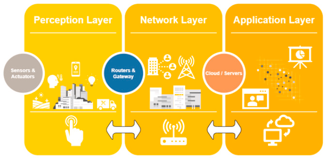

Refers to when sensors are embedded into physical objects, then are connected through networks (wired or wireless) that allow them to interact with each other.

IoT devices are very popular in Smart Homes. This is because of the automations they can provide, where the automations can ensure minimal electrical consumption.
Examples usages:
Smart Lights can turn on or off depending on
occupancy, time of day, or available natural
light.
Because the lights turn off when there are no people
in the room, no electricity is wasted on lighting a
room that no one is using.
This has the same positives as Smart Lights, but with the added benefit of having schedules, and using current local temperatures to make predictions on what the temperature should be.
Because all of these devices are recording data and are connected on a single network, a 3rd party may be able to record video, audio, motion, and other sensors for malicious intents.
There must be enforced protocols to prevent others from retrieving private information/data. So, when a device or user requests information, they must be properly authenticated.
If there is a malicious node, IoT devices must be able to avoid it, by automatically adjusting themselves.
IoT devices can speed up the development of nations through: